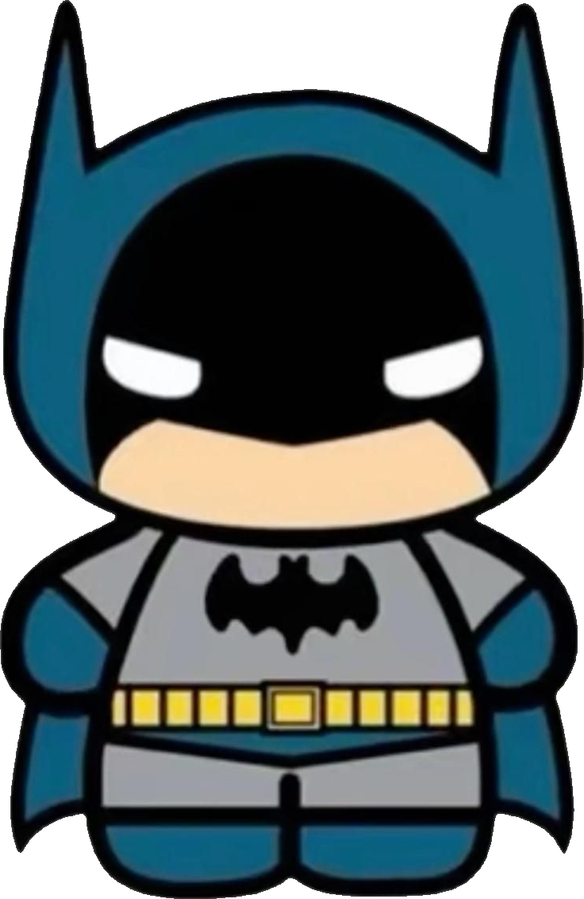

CURRICULUM VITAE DE BRUCE WAYNE
DATOS PERSONALES
- Nombre completo: Bruce Thomas Wayne
- Fecha de nacimiento: 19/02/1968
- Lugar de nacimiento: Gotham City, NJ
FORMACIÓN ACADÉMICA
1982-1984: Cursos en diversas universidades de Europa
Solo me quedaba un semestre
1982: Bajo la tutela de Ted Grant y David Cain
Entrenado en combate mano-a-mano
1982: Bajo la tutela de Oliver Queen
Entrenado en arquería
1983: Bajo la tutela de Henri Ducard
Entrenado en cazahombres
1983: Bajo la tutela de Henri Ducard
Entrenado en cazahombres
1984: Bajo la tutela de Kirigi y otros shinobi
Entrenado en furtividad
1984: Bajo la tutela de bosquimanos africanos
Entrenado en caza
1985-1988: Bajo la tutela de Harvey Harris
Entrenado en técnicas detectivescas
1989-1993: Bajo la tutela de Willie Doggett
Entrenado en cazarrecompensas
EXPERIENCIA LABORAL
1985- : Wayne Enterprises
Presidente
1985- : Gotham City
Justiciero Independiente
1986- : Bat-Familia
Fundador y Líder
1987- : Liga de la Justicia de América
Fundador